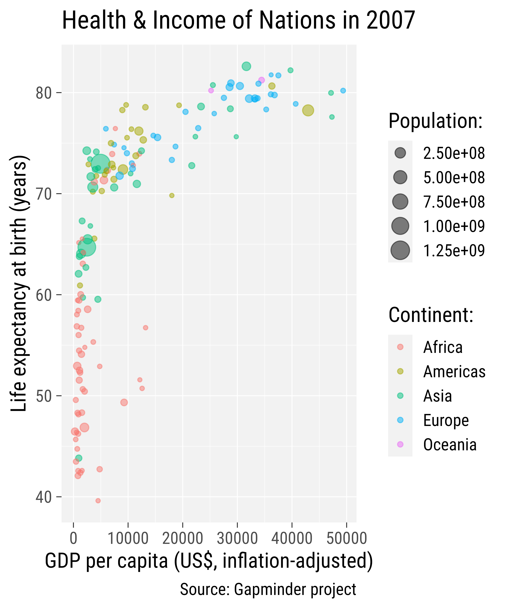

Hands–On
Data Visualization
with {ggplot2}
— Concepts —
Welcome!
— What is the Course About? —
The Data Science Workflow

The data science workflow, modified from “R for Data Science”
The Data Science Workflow

The data science workflow, modified from “R for Data Science”
What is R?
R is a programming language and free software environment for statistical computing and graphics.
R was conceived in 1992 by Ross Ihaka and Robert Gentleman as an open source implementation of the S programming language and released in 1995.
Since then, R has outgrown its original purpose and is used to:
- run statistical analyses and data-science workflows
- design high-level, publication–ready visualizations
- generate automated reports
- develop stand-alone web applications
- create presentation slides, books, and web pages

Illustration by Allison Horst
POLL
Do you use R already?
- Yes, on a regular basis.
- Yes, from time to time.
- Yes, but just starting.
- No.
The Grammar
of Graphics
The Grammar of Graphics
- was introduced by Lee Wilkinson in 2005
- can be used to concisely describe components of a graphic
- provides a set of structural rules
- consists of syntax and semantics
- can be used to define “uncommon” visualizations

{ggplot2} is a system for declaratively creating graphics,
based on “The Grammar of Graphics” (Wilkinson, 2005).
You provide the data, tell {ggplot2} how to map variables to aesthetics,
what graphical primitives to use, and it takes care of the details.
Advantages of {ggplot2}
- consistent underlying “grammar of graphics”
- code-first approach → reproducible and transparent workflow
- very flexible, layered plot specification
- theme system for polishing plot appearance
- lots of additional functionality thanks to extensions
- active and helpful community
POLL
Do you have created visualizations with {ggplot2} already?
- Yes, I can create publication-ready figures with it.
- Yes, but I use it in combination with other tools.
- Yes, but I would consider myself a beginner.
- No, I have never used it before.
A Basic ggplot
data
A Basic ggplot
data +
mapping
A Basic ggplot
data +
mapping +
geometry
A Polished ggplot
data +
mapping +
geometry +
statistics +
facets +
coordinate systems +
scales +
theme

Illustration by Allison Horst

ggplot2 Examples featured on ggplot2.tidyverse.org

Illustration by Allison Horst


Selection of visualizations created 100% with ggplot2 by Thomas Linn Pedersen,
Georgios Karamanis, Timo Gossenbacher, Torsten Sprengler, Jake Kaupp, Jack Davison, and myself.
— A Motivational Example —

— Setup —

Modified from ModernDive
- RStudio is an open-source IDE (integrated development environment) for R
- many features + extensions to facilitate workflows (version control, toc, add-ins, …)

The ggplot2 Package
… is an R package to visualize data created by Hadley Wickham in 2005
Packages?!
A package is a collection of functions, data, and other objects
that are designed to perform specific tasks or solve certain problems.
We need {ggplot2} but also a few other packages:
All of these packages are part of the {tidyverse} package collection:
The Data
The famous Gapminder data set
- life expectancy, GDP per capita, and population by country
- contains complete data covering the years 1952-2007 in 5-year steps
The Data
The famous Gapminder data set
- life expectancy, GDP per capita, and population by country
- contains complete data covering the years 1952-2007 in 5-year steps
# A tibble: 1,704 × 6
country continent year lifeExp pop gdpPercap
<fct> <fct> <int> <dbl> <int> <dbl>
1 Afghanistan Asia 1952 28.8 8425333 779.
2 Afghanistan Asia 1957 30.3 9240934 821.
3 Afghanistan Asia 1962 32.0 10267083 853.
4 Afghanistan Asia 1967 34.0 11537966 836.
5 Afghanistan Asia 1972 36.1 13079460 740.
6 Afghanistan Asia 1977 38.4 14880372 786.
7 Afghanistan Asia 1982 39.9 12881816 978.
8 Afghanistan Asia 1987 40.8 13867957 852.
9 Afghanistan Asia 1992 41.7 16317921 649.
10 Afghanistan Asia 1997 41.8 22227415 635.
# ℹ 1,694 more rowsThe Data
The famous Gapminder data set
- life expectancy, GDP per capita, and population by country
- contains complete data covering the years 1952-2007 in 5-year steps
The Data
The famous Gapminder data set
- life expectancy, GDP per capita, and population by country
- contains complete data covering the years 1952-2007 in 5-year steps
# A tibble: 1,704 × 6
country continent year lifeExp pop gdpPercap
<chr> <chr> <dbl> <dbl> <dbl> <dbl>
1 Afghanistan Asia 1952 28.8 8425333 779.
2 Afghanistan Asia 1957 30.3 9240934 821.
3 Afghanistan Asia 1962 32.0 10267083 853.
4 Afghanistan Asia 1967 34.0 11537966 836.
5 Afghanistan Asia 1972 36.1 13079460 740.
6 Afghanistan Asia 1977 38.4 14880372 786.
7 Afghanistan Asia 1982 39.9 12881816 978.
8 Afghanistan Asia 1987 40.8 13867957 852.
9 Afghanistan Asia 1992 41.7 16317921 649.
10 Afghanistan Asia 1997 41.8 22227415 635.
# ℹ 1,694 more rows

Data Preparation
We are using a few subsets of the Gapminder data:
Data Preparation
We are using a few subsets of the Gapminder data:
# A tibble: 142 × 7
country continent year lifeExp pop gdpPercap income_lvl
<chr> <chr> <dbl> <dbl> <dbl> <dbl> <chr>
1 Afghanistan Asia 2007 43.8 31889923 975. 1
2 Albania Europe 2007 76.4 3600523 5937. 3
3 Algeria Africa 2007 72.3 33333216 6223. 3
4 Angola Africa 2007 42.7 12420476 4797. 3
5 Argentina Americas 2007 75.3 40301927 12779. 4
6 Australia Oceania 2007 81.2 20434176 34435. 4
7 Austria Europe 2007 79.8 8199783 36126. 4
8 Bahrain Asia 2007 75.6 708573 29796. 4
9 Bangladesh Asia 2007 64.1 150448339 1391. 2
10 Belgium Europe 2007 79.4 10392226 33693. 4
# ℹ 132 more rowsThe Data
We are using a few subsets of the Gapminder data:
The Data
We are using a few subsets of the Gapminder data:
library(dplyr)
gm_g7 <- filter(gapminder, country %in% c(
"United States", "Canada", "France", "Germany", "Italy", "Japan", "United Kingdom")
)
gm_g7# A tibble: 84 × 7
country continent year lifeExp pop gdpPercap income_lvl
<chr> <chr> <dbl> <dbl> <dbl> <dbl> <chr>
1 Canada Americas 1952 68.8 14785584 11367. 3
2 Canada Americas 1957 70.0 17010154 12490. 3
3 Canada Americas 1962 71.3 18985849 13462. 4
4 Canada Americas 1967 72.1 20819767 16077. 4
5 Canada Americas 1972 72.9 22284500 18971. 4
6 Canada Americas 1977 74.2 23796400 22091. 4
7 Canada Americas 1982 75.8 25201900 22899. 4
8 Canada Americas 1987 76.9 26549700 26627. 4
9 Canada Americas 1992 78.0 28523502 26343. 4
10 Canada Americas 1997 78.6 30305843 28955. 4
# ℹ 74 more rows— The Structure of a ggplot —
The Components of {ggplot2}
| Component | Function | Explanation |
|---|---|---|
| Data |
ggplot(data)
|
The raw data that you want to visualise. |
| Aesthetics |
aes()
|
Aesthetic mappings between variables and visual properties. |
| Geometries |
geom_*()
|
The geometric shapes representing the data. |
The Components of {ggplot2}
| Component | Function | Explanation |
|---|---|---|
| Data |
ggplot(data)
|
The raw data that you want to visualise. |
| Aesthetics |
aes()
|
Aesthetic mappings between variables and visual properties. |
| Geometries |
geom_*()
|
The geometric shapes representing the data. |
| Statistics |
stat_*()
|
The statistical transformations applied to the data. |
| Scales |
scale_*()
|
Maps between the data and the aesthetic dimensions. |
| Coordinate System |
coord_*()
|
Maps data into the plane of the data rectangle. |
| Facets |
facet_*()
|
The arrangement of the data into a grid of plots. |
| Visual Themes |
theme() and theme_*()
|
The overall visual defaults of a plot. |
Break
— 10 minutes —
A Basic ggplot
ggplot2::ggplot()

— Data —
Data
= define data object to visualize
- usually specified inside
ggplot() - can be specified for each layer as well
Data

— Aesthetics —
Aesthetic Mapping
= link variables to graphical properties
- positions (
x,y) - colors (
color,fill) - shapes (
shape,linetype) - size (
size) - transparency (
alpha) - groupings (
group)
Aesthetic Mapping
aesthetics
Aesthetic Mapping
— Geometrical Layers —
Geometrical Layers
= interpret aesthetics as graphical representations
- points
- lines
- polygons
- text labels
- …
Data-related variables are mapped via aes(), all other set outside aes().
Geometrical Layers
Layers
Layers
Layers
Layers
Combine Layers
Visual Properties of Layers
Setting vs Mapping of Visual Properties
Setting vs Mapping of Visual Properties
Mapping Expressions
Mapping Expressions
Mapping Expressions
Local vs Global Encoding
Adding More Layers: Local Encoding
Adding More Layers: Global Encoding
Overwrite Global Aesthetics
The group Aesthetic
The group Aesthetic
The group Aesthetic
The position Argument
The position Argument
The position Argument
The position Argument
The position Argument
The position Argument
The position Argument
The position Argument
The position Argument
Prepare data for a bar graph example:
The position Argument
Prepare data for a bar graph example
# A tibble: 4 × 7
country continent year lifeExp pop gdpPercap income_lvl
<chr> <chr> <dbl> <dbl> <dbl> <dbl> <chr>
1 Canada Americas 2002 79.8 31902268 33329. 4
2 Canada Americas 2007 80.7 33390141 36319. 4
3 United States Americas 2002 77.3 287675526 39097. 4
4 United States Americas 2007 78.2 301139947 42952. 4 The position Argument
The position Argument
The position Argument
The position Argument
The position Argument
The position Argument
— Labels —
Labels
Overwrite Axis Titles
Overwrite Legend Titles
Remove Titles

Remove Titles
Add Plot Title + Caption
ggplot(
data = gm2007,
aes(x = gdpPercap, y = lifeExp,
color = continent,
size = pop)
) +
geom_point(
alpha = .5
) +
labs(
x = "GDP per capita (US$, inflation-adjusted)",
y = "Life expectancy at birth (years)",
color = "Continent:",
size = "Population:",
title = "Health & Income of Nations in 2007",
caption = "Source: Gapminder project"
)
— Export Your Graphics —
Save the Graphic

Modified from canva.com
How to Work with Aspect Ratios
- don’t rely on the Rstudio viewer pane!
- once you have a “it’s getting close” prototype, settle on a plot size
- Approach 1: save the file to disk and inspect it; go back to your IDE
- tedious and time-consuming…
- tedious and time-consuming…
- Approach 2: use a qmd or rmd with inline output and chunk settings
- set
fig.widthandfig.heightper chunk or globally
- set
- Approach 3: use our {camcorder} package
- saves output from all
ggplot()calls and displays it in the viewer pane
- saves output from all
Setting Plot Sizes in Rmd’s

Setting Plot Sizes via {camcorder}

Exercise
Your Turn: A Basic ggplot
- Create a time series (line chart) of GDP per capita for Oceanian countries
- What is the difference between
geom_line()andgeom_path()? - Map the color of the lines to
country. - Add points for each observation.
- Encode the points with the same colors.
- Turn the points into diamonds.
- Add meaningful titles to your plot.
- Bonus: Use different point shapes for each country.
- What is the difference between
Your Turn: Data Preparation
Your Turn: Geometrical Layers
Your Turn: Geometrical Layers


Your Turn: Aesthetics

Your Turn: Combine Geometries

Your Turn: Local vs Global Aesthetics

Your Turn: Local vs Global Aesthetics
Your Turn: Properties of Layers
Your Turn: Properties of Layers

Source: Albert’s Blog
Your Turn: Labels
Your Turn: Aesthetics (Bonus)
Your Turn: Aesthetics (Bonus)
Break
— 10 minutes —
A Polished ggplot
Store a ggplot as Object
Print a ggplot Object
— Theming —
Theming
= stylistic changes of non-data elements
- complete themes plus custom theme adjustments
- either add complete themes to a plot or set a theme globally via
theme_*() - afterwards, theme settings can be overwritten via
theme()
Add a Complete Theme
Add a Complete Theme
Add a Complete Theme
Add a Complete Theme
Adjust Theme Base Settings
Set a Complete Theme Globally
Set a Complete Theme Globally
Adjust Theme Base Settings
Adjust Theme Base Settings

{systemfonts}
Overwrite Theme Settings
Overwrite Theme Settings
Overwrite Theme Settings
Overwrite Theme Settings
Overwrite Theme Settings
Overwrite Theme Settings Globally
Overwrite Theme Settings Globally

— Facets —
Facets
= split variables to multiple panels
Facets are also known as:
- small multiples
- trellis graphs
- lattice plots
- conditioning
Wrapped Facets
Wrapped Facets
Facet Options: Cols + Rows
Facet Options: Cols + Rows
Facet Options: Free Scaling
Facet Options: Free Scaling
— Scales —
Scales
= translate between variable and property ranges
- feels-like temperature ⇄ x
- reported bike shares ⇄ y
- season ⇄ color
- year ⇄ shape
- …
Scales
The scale_*() components control the properties of all the
aesthetic dimensions mapped to the data.
Consequently, there are scale_*() functions for all aesthetics such as:
positions via
scale_x_*()andscale_y_*()colors via
scale_color_*()andscale_fill_*()sizes via
scale_size_*()andscale_radius_*()shapes via
scale_shape_*()andscale_linetype_*()transparency via
scale_alpha_*()
Scales
The scale_*() components control the properties of all the
aesthetic dimensions mapped to the data.
The extensions (*) can be filled by e.g.:
continuous(),discrete(),reverse(),log10(),sqrt(),date()for positionscontinuous(),discrete(),manual(),gradient(),gradient2(),brewer()for colorscontinuous(),discrete(),manual(),ordinal(),area(),date()for sizescontinuous(),discrete(),manual(),ordinal()for shapescontinuous(),discrete(),manual(),ordinal(),date()for transparency
Continuous vs Discrete in {ggplot2}
Continuous:
quantitative or numerical data
- height
- weight
- age
- counts
Discrete:
qualitative or categorical data
- species
- sex
- study sites
- age group
Continuous vs Discrete in {ggplot2}
Continuous:
quantitative or numerical data
- height (continuous)
- weight (continuous)
- age (continuous or discrete)
- counts (discrete)
Discrete:
qualitative or categorical data
- species (nominal)
- sex (nominal)
- study site (nominal or ordinal)
- age group (ordinal)
Aesthetics + Scales
Aesthetics + Scales

Aesthetics + Scales
Overwrite Scales
Modify Position Scales
Modify Position Scales
Modify Scales
Modify Position Scales
Modify Position Scales
Modify Color Scales
continent_colors
Modify Color Scales
Brewer Palettes

Modify Color Scales
Modify Color Scales
Modify Size Scales
Modify Size Scales
g +
scale_x_log10(
labels = scales::label_comma(),
name = "GDP per capita (log scale)"
) +
scale_y_continuous(
limits = c(35, NA),
breaks = seq(30, 85, by = 5)
) +
scale_color_brewer(
palette = "Dark2"
) +
scale_size(
range = c(1, 9),
breaks = 1:4*250000000,
labels = scales::label_comma(
scale = 1 / 10^6,
suffix = "M"
)
)— Coordinate Systems —
Coordinate Systems
= interpret the position aesthetics
- linear coordinate systems: preserve the geometrical shapes
coord_cartesian()coord_fixed()coord_flip()
- non-linear coordinate systems: likely change the geometrical shapes
coord_polar()coord_trans()coord_map()andcoord_sf()
Cartesian Coordinate System
Cartesian Coordinate System
Changing Limits

Clipping
Remove All Padding
Fixed Coordinate System
Flipped Coordinate System


Flipped Coordinate System
Reminder: Sort Your Bars!
Reminder: Sort Your Bars!
Circular Coordinate System
Circular Cordinate System
Transform a Coordinate System
Transform a Coordinate System
Exercise
Your Turn: A Polished ggplot
Create the following small multiples of slope charts as close as possible
Your Turn: Data Preparation
# A tibble: 284 × 7
country continent year lifeExp pop gdpPercap income_lvl
<chr> <chr> <dbl> <dbl> <dbl> <dbl> <chr>
1 Afghanistan Asia 1987 40.8 13867957 852. 1
2 Afghanistan Asia 2007 43.8 31889923 975. 1
3 Albania Europe 1987 72 3075321 3739. 2
4 Albania Europe 2007 76.4 3600523 5937. 3
5 Algeria Africa 1987 65.8 23254956 5681. 3
6 Algeria Africa 2007 72.3 33333216 6223. 3
7 Angola Africa 1987 39.9 7874230 2430. 2
8 Angola Africa 2007 42.7 12420476 4797. 3
9 Argentina Americas 1987 70.8 31620918 9140. 3
10 Argentina Americas 2007 75.3 40301927 12779. 4
# ℹ 274 more rowsYour Turn: Slope Chart
Your Turn: Slope Chart
Your Turn: Small Multiples
Your Turn: Small Multiples
Your Turn: Small Multiples
Your Turn: Small Multiples
Your Turn: Scales + Coordinate System
gapminder %>%
filter(year %in% c(1987, 2007)) %>%
ggplot(aes(y = lifeExp, x = factor(year))) +
geom_line(aes(group = country), alpha = .3) +
geom_point(aes(fill = gdpPercap), shape = 21) +
facet_wrap(~fct_reorder(continent, lifeExp), nrow = 1) +
coord_cartesian(expand = FALSE, clip = "off") +
scale_y_continuous(
breaks = 7:17*5, limits = c(34, 85),
sec.axis = dup_axis(name = NULL)
) +
scale_fill_distiller(
palette = "Spectral", direction = 1,
labels = scales::label_dollar()
) -> g_slopeYour Turn: Scales + Coordinate System
Your Turn: Theming
Your Turn: Theming
Your Turn: Theming
g_slope +
theme_minimal(base_family = "Asap Condensed", base_size = 14) +
theme(
panel.grid.minor = element_blank(),
plot.title = element_text(face = "bold", size = 24),
plot.subtitle = element_text(color = "grey35"),
plot.title.position = "plot",
plot.caption.position = "plot",
strip.text = element_text(size = 17),
panel.spacing = unit(2, "lines"),
legend.key.height = unit(2.5, "lines")
) -> g_slope_themedYour Turn: Theming
Your Turn: Labels + Titles
g_slope_themed +
labs(
x = NULL,
y = "Life expectation at birth",
fill = "GDP per capita:",
title = "Life expectancy has risen in most countries within the last 20 years",
subtitle = "However, several African countries, especially in the South, such as Zimbabwe, Eswatini, Botswana, Namibia and South Africa have experienced\na considerable drop. Away from Africa, only Iraq and DR Korea (Asia), and Montenegro (Europe) are the only countries with a negative trend.",
caption = "Source: Gapminder project"
)Your Turn: Labels + Titles
Wrap-Up
The Components of {ggplot2}
| Component | Function | Explanation |
|---|---|---|
| Data |
ggplot(data)
|
The raw data that you want to visualise. |
| Aesthetics |
aes()
|
Aesthetic mappings between variables and visual properties. |
| Geometries |
geom_*()
|
The geometric shapes representing the data. |
| Statistics |
stat_*()
|
The statistical transformations applied to the data. |
| Scales |
scale_*()
|
Maps between the data and the aesthetic dimensions. |
| Coordinate System |
coord_*()
|
Maps data into the plane of the data rectangle. |
| Facets |
facet_*()
|
The arrangement of the data into a grid of plots. |
| Visual Themes |
theme() and theme_*()
|
The overall visual defaults of a plot. |
Resources
- “ggplot2: Elegant Graphics for Data Analysis”
by Hadley Wickham, Danielle Navarro, and Thomas Lin Pedersen. - “Data Visualization: A Practical Introduction” by Kieran Healy
- “R Graphics Cookbook” by Winston Chang
- ggplot2 Extension Gallery
- R Graph Gallery
- Official ggplot2 reference
- Official ggplot2 cheatsheet
- aesthetics finder
- My “A {ggplot2} Tutorial for Beautiful Plotting in R” tutorial
That’s it Folks…
Thank you!
You want more? Join the follow-up course!
“Advanced Data Visualization with {ggplot2}”
Cédric Scherer // Hands–On Data Visualization with ggplot2: Concepts